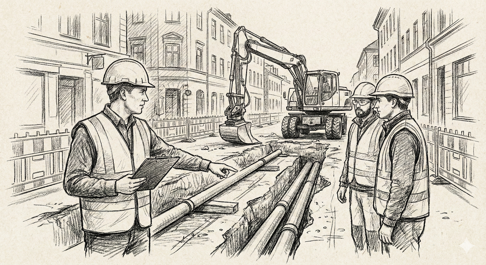

Grupparbete tillsammans med Javautvecklarklassen där vi skapade en
webbplats för recept med inriktning på julens smaker. Gruppen bestod
av flera från min klass, IT-projektledare, så vi roterade roller som
PO, SM, testare, ekonomiansv. Vi fick ihop en bra webbplats och
lärde oss mycket om samarbete i tvärfunktionella team.
Teknik: Scrum
Projekt 2

produktion va-förnyelse
Jag kommer från anläggningsbranschen där jag jobbat som
projektledare i flera år. Ett av mina större projekt var en
VA-förnyelse i en kommun där vi bytte ut gamla ledningar och
förbättrade infrastrukturen. Projektet krävde noggrann planering,
samordning med olika entreprenörer och ständig kommunikation med
kommunen och boende. Vi lyckades genomföra projektet inom tidsramen
och budgeten, vilket var mycket uppskattat.